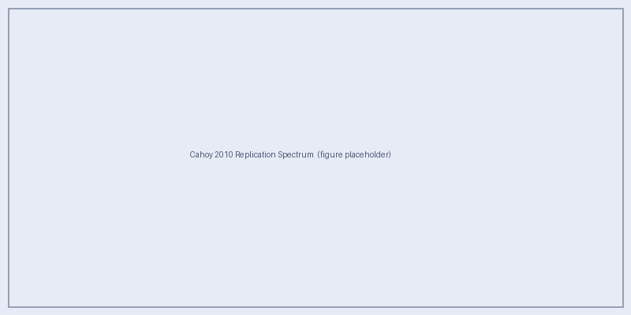

Cahoy et al. 2010 Replication
Can Aurora reproduce the benchmark gas-giant reflected-light spectra from Cahoy, Marley & Fortney (2010)?
Cahoy et al. (2010) computed a grid of gas-giant reflected-light spectra for planets with Jovian-like bulk composition across a range of separations, metallicities, and phase angles using a then-standard correlated-k radiative transfer model coupled with Mie-scattering cloud prescriptions. Their results have been widely used as a benchmark reference for reflected-light modelling of directly-imaged giant planets.
This page documents Aurora’s 1-to-1 replication grid
(aurora_cahoy2010_replication_v0), which serves as the primary validation
baseline confirming that the PICASO 4 / Virga pipeline reproduces the earlier
Cahoy et al. results before Aurora moves into the sub-Neptune parameter space.
Lambertian Contrast Reference
The planet–star contrast for a Lambertian sphere (uniform albedo spatially and spectrally) is given by Eqn 1 in Cahoy et al. (2010):
where \(A_{g}\) is the geometric albedo, \(R_{p}\) is the planet radius, \(r\) is the planet–star separation in the orbital plane, and \(\alpha\) is the phase angle. The phase factor is of order \(10^{0}\) while \((R_{p}/r)^{2}\) is of order \(10^{-6}\), so the phase term dominates the observed contrast in the ranges of interest.
Grid Parameters
The replication grid spans the parameter choices made by Cahoy et al. (2010) for their gas-giant models:
Parameter |
Values |
|---|---|
Host star |
Solar-type (Teff = 5778 K, R★ = 1 R☉) |
Planet mass |
1 MJup |
Separation (AU) |
0.8, 1.0, 2.0, 5.0 |
Metallicity (× solar) |
1, 3, 10, 30 |
Phase (deg) |
0, 30, 60, 90, 120, 150, 180 (every 30°) |
Cloud treatment |
Virga with fsed matched to Cahoy condensation levels |
Grid size: 304 spectra across 16 climate groups.
Grid name |
Spectra |
Climate groups |
Purpose |
|---|---|---|---|
|
304 |
16 |
1-to-1 Cahoy et al. 2010 replication |
Running the Replication
# Submit the two-stage replication grid
bash roadrunner_egp/aurora_subneptune_grid/scripts/submit_cahoy2010_two_stage.sh
# Or manually:
source env/activate_aurora_picaso4_job.sh
python roadrunner_egp/aurora_subneptune_grid/scripts/make_cahoy2010_manifest.py \
--out roadrunner_egp/aurora_subneptune_grid/manifests/cahoy2010_manifest.csv
python roadrunner_egp/aurora_subneptune_grid/scripts/run_climate_cache_chunk.py \
--manifest roadrunner_egp/aurora_subneptune_grid/manifests/cahoy2010_manifest.csv \
--climate-group-index 0
Atmosphere and Cloud Models
Pressure–temperature profile
PICASO’s built-in climate solver (picaso_climate) is used to converge a
self-consistent P–T profile for each unique planet / star / orbit combination.
Because phase is a viewing-geometry parameter, all phase angles share a single
cached climate solution per (planet, orbit) pair.
Clouds with Virga
Virga is used to compute the cloud particle size distribution and optical properties. The sedimentation efficiency fsed is set to reproduce the cloud-top pressures reported by Cahoy et al. (2010) for water ice, ammonia ice, and ammonium hydrosulfide (NH4SH) clouds at the separations of interest.
Molecular opacities
The atmosphere is dominated by H2 and He, with the following molecules contributing significant opacity at the wavelengths of interest:
H2O (water vapour)
CH4 (methane) — dominant at > 1 μm for cold models
NH3 (ammonia) — relevant at 1.0, 1.5, and 2.0 μm
H2–H2 and H2–He CIA continuum
Example: Geometric Albedo Spectrum
Note
Figures will be added once the full replication grid has been computed on HPC. Placeholder description below illustrates the expected output.

Expected output: Geometric albedo as a function of wavelength for Cahoy-like gas-giant models at 1 AU around a solar-type star, for metallicities 1×, 3×, 10×, and 30× solar. Strong molecular absorption bands (H2O, CH4, NH3) become more prominent at higher metallicities. Cloud-free cases show a steeper Rayleigh slope blueward of 0.5 μm.
Phase Curves
Phase curves show how the planet–star contrast varies as the planet moves along its orbit. For circular orbits around solar-type hosts, Cahoy et al. (2010) find that:
At small phase angles (near superior conjunction) the illuminated hemisphere faces the observer — flux is maximum.
At large phase angles (crescent phase) the illuminated sliver decreases — flux falls steeply.
Cloud-free models decline faster with phase than cloudy models because clouds isotropically scatter light, reducing forward-scattering enhancement.
Note
Phase curve plots will be populated once the replication grid run completes.
Comparison with Cahoy et al. Results
Aurora’s validation strategy compares:
Geometric albedo spectra at each separation and metallicity against Fig. 2–5 of Cahoy et al. (2010).
Broadband filter photometry in the optical and near-IR against their filter-averaged albedo tables.
Cloud-top pressure from the Virga output against the condensation curves tabulated in Cahoy et al. (2010) Appendix A.
Quantitative agreement within ~5% in broadband albedo across all separations and metallicities is the acceptance criterion before Aurora proceeds to the sub-Neptune science grid.
References
Cahoy, K.L., Marley, M.S. & Fortney, J.J. 2010, ApJ, 724, 189. doi:10.1088/0004-637X/724/1/189
Batalha, N.E. et al. 2019, ApJ, 878, 70. doi:10.3847/1538-4357/ab1b51
Gao, P. et al. 2018, ApJ, 867, 1. doi:10.3847/1538-4357/aad1f9
Mukherjee, S. et al. 2022, ApJ, 938, 107. doi:10.3847/1538-4357/ac8f41